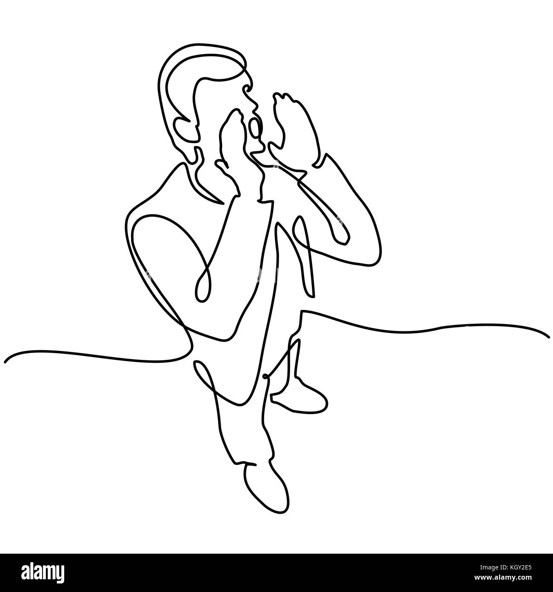

Pagina 5

Orion tuvo un momento en el que pensó en no rendirse, dijo, que si al final nadie creía en él, qué mejor que hacerlo él mismo. Orion, con su seño fruncido, empezó a aclararse con cada paso que daba, en su mente, que había tocado fondo, solo pensaba en avanzar tan rápido como pudiese. Pero conforme se aclaraba su mente con cada paso, le parecía escuchar cosas buenas, cosas positivas, en cuanto se dió la oportunidad de escuchar, Orion empezó a notar que el público lo estaba animando a él.
Orion, se dió cuenta de su potencial, que no importaba qué estuviera pasando o qué tan poco capaz se veía, empezó a acelerar y cuando se dió cuenta, había ganado la carrera